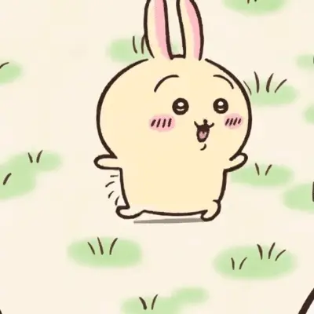
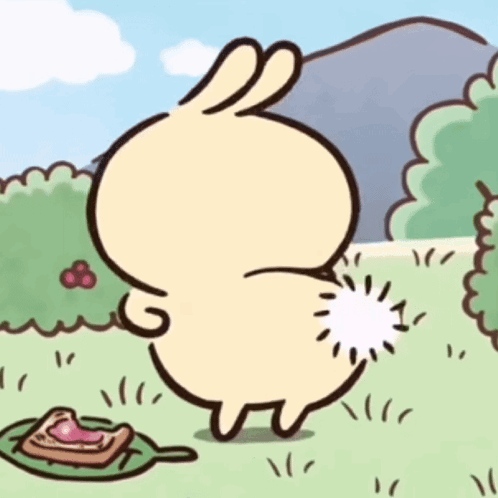
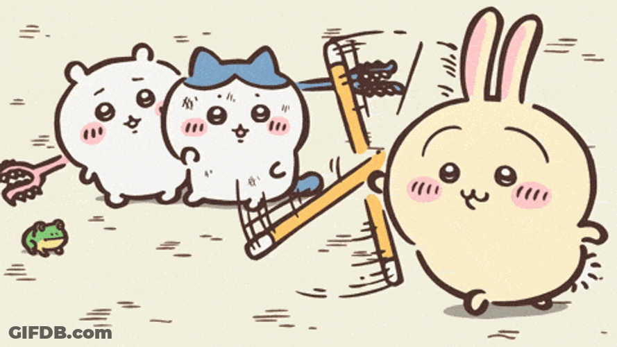
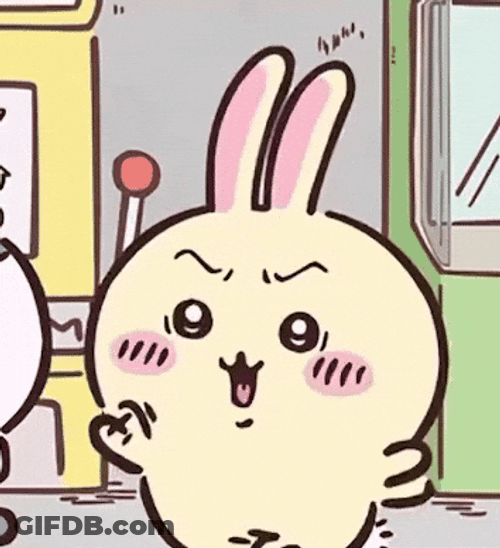
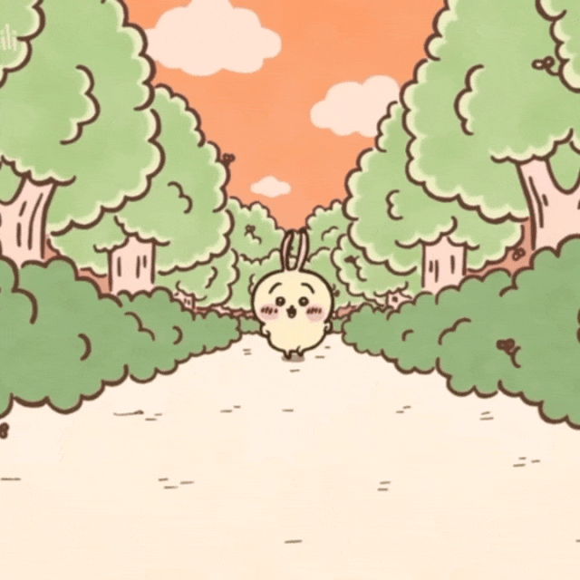
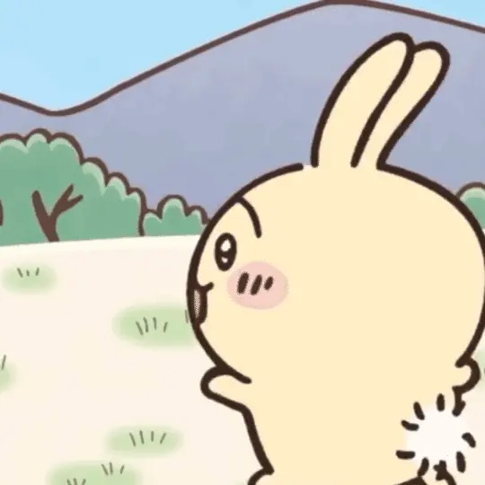
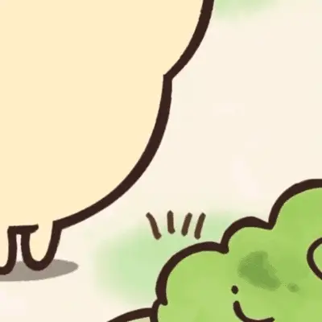
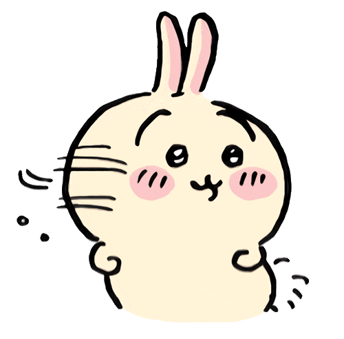

01USAGI / MOTION REFERENCES / 01
先看看，是不是这只乌萨奇。
第一轮收集 · 10 个动画候选。图片会自动循环；05 号视频请点击播放并试听。所有媒体均已下载到本地，可离线浏览。
怎么反馈：直接告诉我编号，以及喜欢或不喜欢的动作、神态、速度。例如“01 就是我要的；02 保留；04 表情太凶”。
当前缺口：拿棒跑步仍未找到精确片段，03 号先看挥棒动作；“哈”的具体声音请在 05 号中试听。
当前缺口：拿棒跑步仍未找到精确片段，03 号先看挥棒动作；“哈”的具体声音请在 05 号中试听。


02

03

04
05

06

07

08
09


10